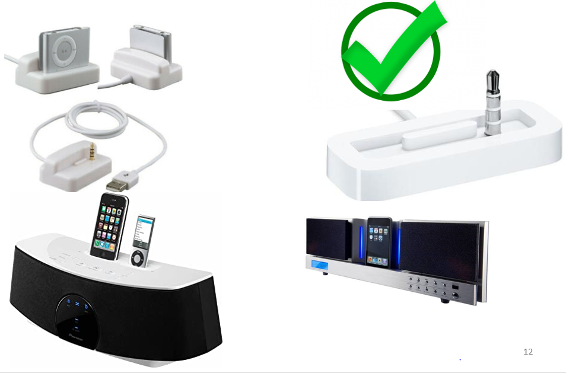

Séquence B · IT+I2D
Imaginez la station qui donne envie.
« Comment créer et modéliser une station d'accueil pour iPod Shuffle ? »

Mise en situation
Concevoir une nouvelle station d'accueil pour iPod Shuffle, et pour tout type d'appareil mobile de votre choix.
Vous êtes totalement libres dans vos choix. Une seule obligation : susciter l'enthousiasme chez le client et chez les utilisateurs futurs.
Le dossier à rendre suit six étapes : modéliser l'iPod, le mettre en plan et le coter, étudier le cahier des charges en SysML, chercher des idées, modéliser votre station avec son impact environnemental, puis valider le cahier des charges.
Le travail se fait en groupe de trois, avec le dossier « Station iPod - dossier a rendre.docx ».
Méthode de travail
Un seul fichier pour tout rendre.
Toutes vos productions vont dans « station-ipod-dossier-a-rendre.docx ». Rien ne se dépose sur ce site : il sert à comprendre, à s'aider et à vérifier.
Réalisez le travail demandé en binôme. La modélisation se fait en monôme dans le logiciel Solidworks de Dessin Assisté par Ordinateur (DAO).
Montrez votre travail au professeur avant de l'insérer.
Insérez chaque production à sa place, avec une légende et une explication.
Sauvegardez le fichier sur votre ordinateur mais également sur clés USB puis passez à l'étape suivante.
Les activités
Six étapes, un seul objectif.
Chaque activité propose trois niveaux d'accompagnement : guidé, standard ou autonome.
Observer l'appareil, le croquiser, puis le modéliser sous SolidWorks.
Ouvrir l'activité →Étape 2Mise en plan et cotationReprésenter l'iPod en 3 vues standards et coter ce qui servira à la station.
Ouvrir l'activité →Étape 3Cahier des charges et SysMLDécrire le besoin avec les diagrammes de contexte, de cas d'utilisation et d'exigences.
Ouvrir l'activité →Étape 4Pré-étude et créativitéSuivre la leçon, chercher des idées, construire la carte mentale, proposer un cahier des charges amélioré.
Ouvrir l'activité →Étape 5Modéliser la station et son impact environnementalModéliser la station, y assembler haut-parleurs et prise jack, étudier son impact.
Ouvrir l'activité →Étape 6Valider et présenter la stationValider les six critères, terminer le compte-rendu et préparer l'exposé.
Ouvrir l'activité →Ressources
Les fichiers du site.
Pour l'enseignant : les fichiers se rangent dans les dossiers du site, avec les noms indiqués sur chaque page. Les images remplacent les cadres en pointillés.
documents/Sujet, dossier à rendre, barème, fiches outils, leçon de créativité, fichiers SolidWorks fournis.
images/Images des documents originaux et exemples de référence.
videos/Les vidéos du sujet et les six vidéos d'aide SolidWorks.
Les documents de la séquence
- PDFiPod - Station d'accueil - sujetLe sujet ·
documents/ipod-station-sujet.pdfOuvrir - DOCXStation iPod - dossier a rendreLe dossier à compléter, 6 pages ·
documents/station-ipod-dossier-a-rendre.docxOuvrir - PDFBarème de notationÉvaluation sur 20 ·
documents/bareme-de-notation.pdfOuvrir - PDFSysML : les diagrammesAnnexe documentaire, 5 pages ·
documents/DT-diagrammes-SYSML.pdfOuvrir